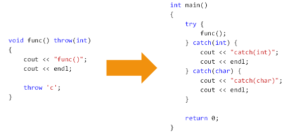

1，本文介绍一个新的概念，它是一个重要的概念，并且是 C++ 中的一个高级主题；
2，问题：
1，如何判断一个函数（不是自己写的，有可能是第三方库中的函数）是否会抛出异常，以及抛出那些异常？
1，学习了异常处理，我们在调用一个函数的时候，就应该知道这个函数会不会抛出异常，如果会，抛那些：
2，如果是第三方库的函数，只有函数声明，没有函数实现，则也不知道会不会抛出异常；
3，查看函数文档也是不错的方法，但是如果手头文档和真实的库的版本不匹配，有可能查到的东西就是不准确的；
3，异常规格说明：
1，C++ 提供语法用于声明函数所抛出的异常；
2，异常声明作为函数声明的修饰符，写在参数列表后面：
1，/* 可能抛出任何异常 */
void func1();
/* 只能抛出的异常类型：char 和 int */
void func2() throw(char, int);
/* 不抛出任何异常 */
void func3() throw();
4，异常规格说明的意义：
1，提示函数调用者必须做好异常处理的准备；
1，如果想知道调用的函数会抛出哪些类型的异常时，只用打开头文件看看这个函数是怎么声明的就可以了；
2，提示函数的维护者不要抛出其它异常；
3，异常规格说明是函数接口的一部分；
1，用于说明这个函数如何正确的使用；
5，如果抛出的异常不在声明列表中，会发生什么？
6，下面的代码输出什么？

7，异常规格之外的异常编程实验：
1 #include <iostream>
2
3 using namespace std;
4
5 void func() throw(int)
6 {
7 cout << "func()";
8 cout << endl;
9
10 throw 'c';
11 }
12
13 int main()
14 {
15 try
16 {
17 func();
18 }
19 catch(int)
20 {
21 cout << "catch(int)";
22 cout << endl;
23 }
24 catch(char)
25 {
26 cout << "catch(char)";
27 cout << endl;
28 }
29
30 return 0;
31 }1，BCC 显示：
1，func()
Abnormal program termination
2，g++ 显示：
1，terminate called after throwing an instance of 'char'
2，已放弃
3，VC 2010 显示：
1，func()
2，catch(char)
8，unexpected() 函数说明：
1，函数抛出的异常不在规格说明中，全局 unexpected() 被调用；
2，默认的 unexpected() 函数会调用全局的 terminate() 函数；
1，这是 BCC 和 g++ 编译器的行为；
3，可以自定义函数替换默认的 unexpected() 函数实现；
1，VC 2010 编译器的也不遵循行为；
4，注意：不是所有的 C++ 编译器都支持这个标准行为；
1，在异常处理这个技术点上面，编译器实现是有差异的，如果我们未来的项目中确实的要用到函数的异常规格说明时，我们最好的写一个小的测试程序，看看当前项目里面所使用的 C++ 编译器在这一个技术点的行为是怎样的，有没有遵循标准的 C++ 规范；
9，unexpected() 函数的替换：
1，自定义一个无返回值无参数的函数：
1，能够再次抛出异常：
1，当异常符合触发函数的异常规格说明时，恢复程序执行；
1，见 本文10 中程序 throw 1；
2，否则，调用全局 terminate() 函数结束程序；
2，调用 set_unexpected() 设置自定义的异常函数：
1，参数类型为 void(*)()；
2，返回值为默认的 unexpected() 函数入口地址；
10，自定义 unexpected() 函数编程实验：
1 #include <iostream>
2 #include <cstdlib>
3 #include <exception>
4
5 using namespace std;
6
7 void my_unexpected()
8 {
9 cout << "void my_unexpected()" << endl;
10 // exit(1); // 退出；
11 throw 1;
12 }
13
14 void func() throw(int)
15 {
16 cout << "func()";
17 cout << endl;
18
19 throw 'c';
20 }
21
22 int main()
23 {
24 set_unexpected(my_unexpected);
25
26 try
27 {
28 func();
29 }
30 catch(int)
31 {
32 cout << "catch(int)";
33 cout << endl;
34 }
35 catch(char)
36 {
37 cout << "catch(char)";
38 cout << endl;
39 }
40
41 return 0;
42 }1，exit(1) 结果：
1，g++ 编译器：
func()
void my_unexpected()
2，BCC 编译器：
func()
void my_unexpected()
3，VC 2010 编译器：
func()
catch(char) // 未有遵循标准 C++ 规范；
2，throw 1 结果：
1，g++ 编译器：
func()
void my_unexpected()
catch(int) //与触发函数 func() 的异常规格符合，于是程序恢复执行；
2，BCC 编译器：
func()
void my_unexpected()
catch(int)
3，VC 2010 编译器：
func()
catch(char) // 未有遵循标准 C++ 规范，直接捕获，然后处理；
3，如果以后项目开发，会使用函数异常说明这个技术点，最好在项目开发前写一些小程序测试下当前使用的 C++ 编译器有没有很好的遵循 C++ 的规范；
11，小结：
1，C++ 中的函数可以声明异常规则说明；
2，异常规格说明可以看作接口的一部分；
3，函数抛出的异常不在规格说明中，unexpected() 被调用；
4，unexpected() 中能够再次抛出异常；
1，异常能够匹配，恢复程序的执行；
2，否则，调用 terminate() 结束程序；
3，un_expected() 函数是正确处理异常的最后机会，如果没有抓住，terminate() 函数会被调用，当前程序以异常告终；